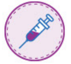

|
Please see Prescrbing Infrormation for Quadrecel
(49281-564-58 and 49281-564-88).
|
|
Please see full Important Safety Information for Quadracel below
|
|
{{customText[Hello|Good Morning|Good Afternoon|Dear]}}
{{customText Mr., Mrs., Ms., Dr.,[First and/orLast Name]}}
{{customText Introduction line}}
|
|
Quadracel Vero formulation1 in PREFILLED SYRINGE will be available to
order soon. Sanofi Pasteur is commmitted to advancing the experience of protection
for your practice:
|
INDICATION
|
|
Quadracel is indicated for active immunization against diphtheria, tetanus,
pertussis, and poliomyelitis. A single dose of Quadracel is approved for use
in children 4 through 6 years of age as a fifth dose in the diphtheria, tetanus,
pertussis vaccination (DaP) series, and as a fourth or fifth dose in the
inactivated poliovirus vaccination (IPV) series, in children who have received
4 doses of Pentacel® (Diphtheria and Tetanus Toxoids and cellular Pertussis
Adsorbed, Inactivated Poliovirus and Haemophilus b Conjugate (Tetanus
Toxoid Conjugate] Vaccine) and/or DAPTACEL® (Diphtheria and Tetanus
Toxoids and Acellular Pertussis Vaccine Adsorbed).
|
IMPORTANT SAFETY INFORMATION
|
|
Contraindications to vaccination with Quadracel include: a severe allergic
reaction (e.g., anaphylaxis) to any ingredient of Quadracel or following any
other diphtheria toxoid-, tetanus toxoid-, or pertussis antigen-containing
vaccine, or inactivated poliovirus vaccine; encephalopathy within 7 days after a
previous dose of a pertussis antigen-containing vaccine with no other
identifiable cause; or a progressive neurologic disorder.
|
Please see Important Safety Information continued below. Please see Prescribing
Information For Quadracel ( 49282-564-58 and 49282-564-88).
|
|
|
|
By using Quadracel, a combination booster dose, you can
complete the DaP/IPV immunization series with one less
injection and vaccine in your refrigerator2-4
|
|

|
Using Sanofi Pasteur TaP antigen-containing vaccines and
Quadracel together, you can have continuity of DTaP
antigens across the 5-dose series2,5,6
|
|
|
Quadracel allows you to complete the DTaP/IPV
immunization series with a combination booster dose for
4-to-6 years old3,7
|
|
|
Experience a simpler administration process with prefilled suringes,
available to order soon from Quadracel.2,8
|
|
|
|
|
|
Go to Quadracel.com to learn more
|
IMPORTANT SAFETY INFORMATION (CONTINUED)
|
|
Carefully consider benefits and risks before administering Quadracel to
persons with a history of: fever 2105°F, hypotonic-hyporesponsive episode, or
persistent, inconsolable crying lasting ≥3 hours within 48 hours after a previous
pertussis antigen-containing vaccine; seizures within 3 days after a previous
pertussis antigen-containing vaccine; Guillain-Barré syndrome occurring within
6 weeks following receipt of a prior vaccine containing tetanus toxoid; or
adverse events after a previous dose of Quadracel or receipt of any other
tetanus toxoid-, diphtheria toxoid-, or pertussis antigen-containing vaccine.
The most common local and systemic adverse reactions to Quadracel include
pain, erythema, and edema at the injection site; myalgia, malaise, and
headache. Other adverse reactions may occur.
Vaccination with Quadracel may not protect all individuals.
|
|
Please see Prescribing Information For Quadracel ( 49282-564-58 and 49282-564-88).
|
|
{{customText Sincerely, Talk with you soon, Thank you, Respecfully}}
{{customText Email Signature
Rep's Name
Rep's Email Address }}
|
|
DaP=diphtheria, tetanus, and acellular pertussis; IPV=inactivated poliovirus vaccine.
References: 1 Data on file Customer letter 2021 Swiftwater PA® Sanof Pasteur Inc
QuadracelPrescnbinalInformationISwiftwater.…PA®SanofiPasteurInc3.Centers fol
Disease Control and Prevention. Recommended child and adolescent immunization
schedule for ages 18 years or younger, United States, 2021. Accessed November 16,
2021. https://www.cdc.gov/vaccines/schedules/downloads/child/0-18yrs-child-combined-
schedule.pdf 4. Mosley JF 1l, Smith LL, Parke CK, Brown JA, LaFrance JM, Clark PK.
Quadracel: vaccination against diphtheria, tetanus, pertussis, and poliomyelitis in children.
PT. 201641(4):238-253. 5. Liang J, Wallace G, Mootrey G. Licensure of a diphtheria and
tetanus toxoids and acellular pertussis adsorbed and inactivated poliovirus vaccine and
guidance for use as a booster dose. MMWR Morb Mortal Wkly Rep. 2015,64(34):948-949.
doi:10.15585/mmwr.mm6434a5 6. Data on file. Internal acellular pertussis antigen
statement. Swiftwater, PA: Sanofi Pasteur Inc. 7, Pentacel [Prescribing Information].
Swiftwater, PA: Sanofi Pasteur Inc. 8. Quadracel (Prescribing Information.] (Prefilled.)
Swiftwater, PA: Sanofi Pasteur Inc.
|
|